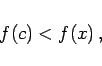
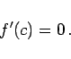

Inhalt Index DeskTop Bronstein

 Differentialrechnung Differentiation von Funktionen einer Veränderlichen Hauptsätze der Differentialrechnung
Differentialrechnung Differentiation von Funktionen einer Veränderlichen Hauptsätze der Differentialrechnung


Wenn eine Funktion y =f(x) in einem zusammenhängenden Intervall definiert ist und in irgendeinem inneren Punkt x =c dieses Intervalls ihren größten oder kleinsten Wert besitzt (s. Abbildung), d.h., wenn für alle x dieses Intervalls gilt
| f(c) > f(x) | (6.27a) |
oder
|  | (6.27b) |
und wenn darüber hinaus ihre Ableitung im Punkt c existiert, dann kann diese dort nur gleich Null sein:
|  | (6.27c) |
Die geometrische Bedeutung des Satzes von FERMAT besteht darin, daß eine Funktion, die den Satz erfüllt, in den Punkten A und B der Funktionskurve parallel zur x-Achse verlaufende Tangenten besitzt (s. Abbildung).
Der Satz von FERMAT stellt aber lediglich eine notwendige Bedingung für die Existenz eines Maximal- oder Minimalwertes einer Funktion in einem Intervall dar. Aus der folgenden linken Abbildung erkennt man, daß die Bedingung nicht hinreichend ist: Im Punkt A ist zwar f'(x) = 0 erfüllt, aber es gibt weder einen Maximal- noch einen Minimalwert an der Stelle.
Auch die Bedingung der Differenzierbarkeit im Satz von FERMAT ist wesentlich. So hat die Funktion im Punkt E der rechten Abbildung zwar einen Maximalwert, die Ableitung existiert dort aber nicht.